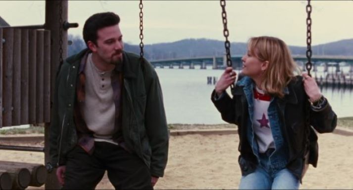

Chasing Amy was an infuriating experience. There aspects of this film that I genuinely liked about this film. There were jokes and scenes that legimately made me chuckle and smile, most natably a scene in which Banky (Jason Lee) and Alyssa (Joey Lauren Adams) were comparing scars a la Jaws (1975) from sexual expeirences as Holden (Ben Affleck) is sulking in the corner. There was some solid commetary on performative blackness, masculinity and sexuality through the character Hooper X (King Mustafa Obafemi). There was solid use of storyboarding in a few scenes, such a the hockey game in which Holden and Alyssa's fight is juxtaposed with the hockey fight on the ice.
However, I found myself frustrated because of what the charming aspects of this film are in service of. Holden is infatuated with Alyssa from the moment he meets her. The only problem is that she is a lesbian. But of course that doesn't stop the movie from reinforcing a view that has since gone from a mainstream view at the time, to a fringe view held by weirdos: that one can simply change their sexuality on whim. It makes me feel like I'm watching director Kevin Smith directing a fanfiction than a quality film, especially given some of the dialogue that's written for both Holden and Banky. It's why I can't enjoy this this movie overall, it's many charming moments are overshadowed by a male fantasy, turning a lesbian straight. Because of that, I can't give it any higher than...
5/10